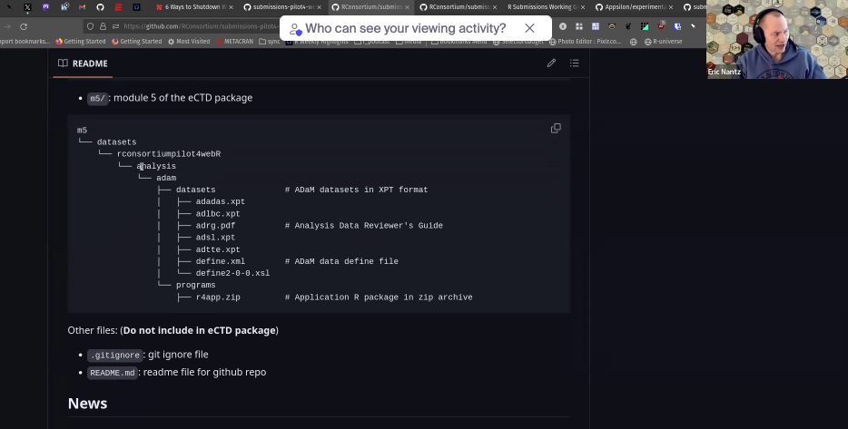

- Ben Straub (GSK)
- Eric Nantz (Eli Lilly)
- Gregory Chen (MSD)
- Heidi Curinckx (Johnson & Johnson)
- HyeSoo Cho (FDA)
- Jizu Zhi (FDA)
- Joseph Rickert (R Consortium)
- Nan Xiao (Merck)
- Ning Leng (Roche/Genentech)
- Paul Schuette (FDA)
- Robert Devine (Johnson & Johnson)
- Saghir Bashir (Argenx)
- Sam Parmar (Pfizer)
- Kangjie Zhang (Bayer)
- Youn Kyeon Chang (FDA)
The meeting was recorded and the video is available.
Pilot 3 Update
Ben Staub provided an update on Pilot 3
- The Pilot 3 team is ready to make the resubmission.
- The team will make the submission on Friday, April 12.
- Ning will alert Bev at Roche who tests the gateway connection and makes the actual submission.
- If all goes well, we expect the FDA could produce an evaluation report in late June or early July.
Pilot 4
Eric Nantz reported on the Plot 4 effort. (9:11 into the video)
WASAM Version
Eric asked for guidance on the placement of the zip file containing the application source files in the eCTD bundle. The WG decided that the placement indicated in the figure below looks fine.
 The ADRG will provide instructions for running the application. The workflow will be something like:
- Unzip the file
- Execute the functions provided to compile the WASM application
- Execute the functions provided to run the application. Two versions of execution functions will be provided:
- Functions to execute with WASM
- Functions to run a normal Shiny app as in Pilot 2
Decisions were made:
- to continue zip files for M5, and not M#, even though this may throw a low level error.
- to keep the datasets in a sub directory of the directory containing the WASM code without having to copy them into a another location before building the app.
A question was asked about what persists on the workstation when the browser is closed. The answer was: not much persists on the machine. It may be the case that some information is cached but nothing is written to the disk.
A question was asked about having a short cut to launch the application. The answer is that in the current state of WebAssembly it is necessary to start a new R session (or other process) that can serve static files.
Also note the the process that spins up WebAssebly installs the required R packages. Unfortunately, with the current state of the technology there is no way to snapshot the versions of the packages.
Container Version
- A major development at the FDA is that FDA IT rejected the request to use Podman, but recommended that we use Docker.
- Eric will include instructions in the ADRG to setup and run Docker containers.
Communication and Documentation
- Joe pointed out the infrastructure developed by the Submissions working group is significant and complex and that it is difficult to explain. He asked if we should undertake an effort to expand the website to include materials to explain the processes and technology to newcomers and document the history of what has been done.
- Ning suggested that we follow the lead of the R Valid Hub and look for a communications manager or assemble a small team.
- Eric noted that we have been focused on the submission itself and do not want to take on the challenge of how companies might establish their internal environments. All agreed with this.
- Joe pointed out that the fact that Ning was chatting with Doug Kelkhoff is a good sign that there seems to be sufficient communication among the working groups to keep the working groups focused and avoid duplication.
- Sam suggested putting a start here page and time line on the webpage. For example, see the NEST Timeline.
- Eric noted that there might be a quarto extension to do a time line.
- A suggestion was made to compile all of our presentation.
- The WG will open an issue on the submission-wg repository to collect ideas
- he R for Clinical Study Reports and Submission website might serve as a model.
Actions
Joe will:
- compile suggestions for improving the website
- See what help the RC marketing team can provide
- start looking for a communications manager
Conference Presentations
- pharmaSUG - May 19 to 24
- Appsilon is planing a presentation on Pilot 4 work: SS-376 : Experimenting with Containers and webR for Submissions to FDA in the Pilot 4, André Veríssimo and Ismael Rodriguez Appsilon of Appsilon.
- SS-344 : Piloting into the Future: Publicly available R-based Submissions to the FDA by Benjamin Straub, GlaxoSmithKline
- UseR! 2024
- Ning has submitted an abstract about Submissions WG work
- Ning and Eric will be presenting at the DIA webinar
Actions
- Joe will ask RC marketing to prepare an RC slide for Sam and Appsilon to use in their presentations
- Ning will provide the details on the DIA webinar so we can promote it.
Recommended R Versions
It turns out that making a recommendation for the version of R for companies to used in their submissions that would best harmonize with the versions that are likely to be in use at the FDA is much harder than we anticipated. Even our phrase for identifying our recommendation “Last patch version of the previous subversion” is not without ambiguity.
- It is likely that each company will have its own approach to managing versions for submissions
- Our new goal is to see if we can make an R Consortium recommendation that has sufficient industry support.
- The FDA would like to avoid the extremes:
- Submissions using very old R versions
- Submissions using the latest R development version
- The FDA would also like to have submissions that are likely to still be available over a six year horizon. (FDA retention rules are six years.)
- Ning proposed a series of posts from different companies on how they deal with versioning.
- After we have published a few posts we will survey the industry.
Action
- Ning will draft a post on the Roche approach
- Joe will have R Consortium Marketing produce the post
Next meeting
The next meeting of he working group will be on Friday, May 3, 2024 at 9AM Pacific Time.